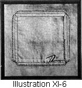

Select any picture to view an
enlargement in a new window
1917—American Dressmaking Step by Step
by Mme. Lydia Trattles Coates
Chapter 11—Darning and Patching
Lesson 260—Darning
Darning is a process of weaving over worn portions. Review Lesson 2 on the warp and woof of materials. The warp threads are the lengthwise threads, and the woof threads are the crosswise threads,
In darning, use a thread or cotton of color and texture matching the material as nearly as possible, and a needle one inch longer than is used in ordinary needlework.
To Make the Darning Stitch
- Begin a little distance above the worn place and work downward. Follow the warp threads, weaving over and under the woof threads. Carry your weave a little beyond the worn place.
- Turn and work upward, passing the needle over the threads which you passed under as you worked downward. Pass under the threads which you worked over while coming downward, keeping the weave as even as possible.
Lesson 261—The Running Darn (Illustration XI-1)
Use the Darning Stitch, working lengthwise of the garment only.
Lesson 262—The Woven Darn (Illustration XI-2)
To Make the Woven Darn
- Use the Darning Stitch lengthwise, covering the worn place.
- Turn the work and make the same stitch crosswise of the garment, following the weave of the woof threads. Consider the lengthwise stitches as the warp and pass over and under these stitches and through any portion of the material that they may cover. When there is a hole in the garment, fill the hole full of darning stitches. Do not draw the threads too tightly. If the hole is large, baste the part to be darned over thin oilcloth or heavy paper before darning.
Lesson 263—The Reinforced Dart
Lay a piece of the same material, or of material matching as nearly as possible, under the worn place. Darn over this, doing the work the same as in the Woven Darning.
Lesson 264—The Set-In Patch (Illustrations XI-3 and 4)
To Make the Set-in Patch
- Cut away all frayed or worn parts, making a square hole.
- Cut each corner diagonally 1/4 of an inch deep. Turn under all four edges.
- Have the patch cut square and large enough to cover all worn places around the hole. Place the right side of the patch against the under or wrong side of the garment, matching the warp of the garment and the patch. Match, also, any stripe or design. Baste on the right side close to the turned-in edges.
- Hem around the square on right side, using Hemming Stitch.
- Turn under the four sides of the patch on the wrong side and hem flat to the garment with the Hemming Stitch.
Lesson 265—The Overhand Patch (Illustrations XI-5 and 6)
To Make the Overhand Patch
- Cut the patch square and 1/2 of an inch larger then the worn place on the garment.
- Fold under the four sides of the patch 1/4 of an inch and baste the patch to the right side of the garment, basting on the turned edges, and being careful to match the warp thread and design.
- Fold the garment back so that you have the folded edges of the garment and the patch together and overhand.
- Remove bastings. Cut away the worn places on the underside, and be careful not to cut the patch.
- Cut the corners diagonally. Turn under 1/4 of an inch. Overcast to finish the corners.
Lesson 266—Catch Stitch or Flannel Patch (Illustration XI-7)
To Make Catch Stitch or Flannel Patch
- Have a patch cut square and large enough to cover the worn part.
- Place the right side of the patch on the underside of the garment, matching the warp threads of both the garment and patch, then baste.
- Catch stitch to garment on underside.
- Turn garment to right side and cut worn portion away, then catch stitch to patch. Remove bastings.